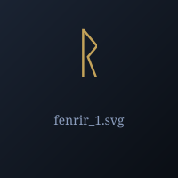

Fenrir — огромный волк, сын Локи

Фенрир ("Обитающий в болоте") — огромный волк, сын Локи и Анграбоды. Рос в Асгарде, но боги испугались его силы и связали волшебной лентой Глейпнир. В Рагнарёке отомстит за сына и убьёт Одина.
Происхождение: Род Локи и Анграбоды
Германическое имя: Faurîsaz
Роль: огромный волк, сын Локи
Прозаическая Эдда, Гюльвагиннинг